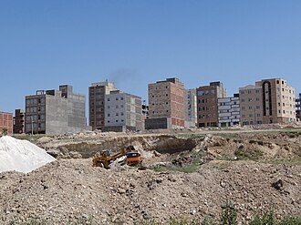

Part III – Water Neutrality and Governance Substrate: Building Civilization's Foundation
How to create the legal, financial, and technical framework that makes permanent water infrastructure possible in ungoverned spaces
While 90% of Middle Eastern households have plumbing, the water systems must be maintained and must be protected to ensure reliability in conflict zones (Part IV). But before we can build infrastructure that lasts fifty years, we must build the governance substrate that makes fifty-year bonds possible.

Figure 1: Rapid urban expansion like this construction boom on the outskirts of Ardabil, Iran, creates new demands for water infrastructure. Without planning for water access from the start, these developments often strain existing systems or rely on intermittent supply - exactly the reliability gaps this plan addresses.
Source: Wikimedia Commons
.jpg){kind=link}
The Central Problem: Infrastructure Requires Civilization
As a civil engineer in Texas, I worked within a framework most people never see: title insurance that traces back to Spanish land grants, water rights adjudicated over a century, cadastral surveys to the inch, bond markets that will finance 30-year infrastructure, and standards bodies (AWWA, ASCE, TCEQ) that define what "acceptable" means.
This isn't bureaucracy. This is civilization.
Remove any piece of that substrate and infrastructure becomes impossible. You cannot finance a pipeline that might be blown up. You cannot maintain systems when governments are intermittent. You cannot plan for fifty years when property rights change with each coup.
The Middle East faces a governance gap, not just a water gap. Parts I and II outlined the engineering - fix leaks, replumb cities, build the physical infrastructure. But who finances it? Who insures it? Who enforces the standards? Who repairs it when it breaks during conflict?
This part addresses building the governance substrate itself.
1. The Investability Thesis: Why Governance Comes First
The Bond Market Reality
Infrastructure bonds require three things:
- Guaranteed revenue streams (rate payers who actually pay)
- Asset protection (infrastructure that survives to generate revenue)
- Legal enforceability (courts that uphold contracts)
In conflict zones, all three are uncertain. Bond ratings reflect this: infrastructure in disputed territories carries risk premiums that make projects unfinanceable. Lloyd's of London won't underwrite pipelines that get targeted. The World Bank won't fund systems that governments might seize or militias might destroy.
Water neutrality isn't a diplomatic nicety. It's the prerequisite for capital.
What "Neutral" Actually Means
In engineering terms, neutral infrastructure means:
- Protected legal status under international frameworks
- Financial guarantees that survive regime changes
- Technical standards that all parties recognize
- Inspection and certification by credible third parties
- Liability frameworks that make attacks financially catastrophic
This is closer to how we treat submarine cables (protected under UNCLOS) or how aviation operates under ICAO standards than to traditional treaty law.
The Capital Requirements
To replumb the Middle East (Parts I-II) requires approximately $50 billion over 20 years. That capital only flows if:
- Infrastructure has protected status
- Standards are internationally recognized
- Inspection regimes verify compliance
- Liability frameworks deter attacks
- Insurance markets will cover the assets
Cost of governance substrate: $500 million over 5 years to establish the framework that enables $50 billion in infrastructure investment.
2. Standards as Shared Reality: The Technical Foundation
Why Standards Matter
When I stamp engineering drawings in Texas, I'm certifying they meet:
- AWWA standards for water mains
- ASCE 7 for structural loads
- TCEQ regulations for water quality
- Local amendments and site-specific conditions
These standards aren't suggestions. They're legally binding, professionally enforced, and internationally recognized. A PE in California knows exactly what my Texas stamp means.
In much of the Middle East, this framework doesn't exist. There are national codes, but they're inconsistently enforced. There are regional practices, but they're not standardized. There's no shared definition of what "acceptable" infrastructure means.
Creating International Water Infrastructure Standards
Proposal: Middle East Water Infrastructure Standards (MEWIS)
Based on:
- AWWA standards (North American baseline)
- ISO water quality standards
- IEC standards for SCADA systems
- Regional adaptations for climate, seismicity, conflict resilience
Cost: $50 million over 3 years
- Convene standards body ($5 million)
- Draft technical specifications ($10 million)
- Regional workshops and adoption ($15 million)
- Translation and publication ($5 million)
- Training and certification programs ($15 million)
Precedents That Work
International Telecommunications Union (ITU): Created technical standards that let phone networks interoperate globally, even during the Cold War. Governed by engineers, not diplomats.
International Civil Aviation Organization (ICAO): Air traffic control standards that work across all borders. Planes land safely in countries actively at war with each other.
Universal Postal Union (UPU): Mail delivery across hostile borders because standards and liability frameworks supersede politics.
The pattern: Technical standards, enforced by credentialed professionals, funded by beneficiaries, with clear liability for violations.
3. From Tribal Rights to Water Districts: The American Precedent
How the American West Solved This
In 1900, the American West looked like the modern Middle East:
- Competing tribal and settler water claims
- No cadastral surveys in vast territories
- Range wars over water access
- No functioning government in many areas
- Upstream/downstream conflicts
By 1950, we had:
- The Colorado River Compact (1922)
- Bureau of Reclamation managing major systems
- State water rights registries
- Federal standards and inspection
- Functioning bond markets for water infrastructure
How we got there:
- Survey everything: Cadastral surveys established property boundaries
- Adjudicate rights: Courts settled competing claims with finality
- Create districts: Water districts with taxing authority and eminent domain
- Establish standards: Federal standards that states adopted
- Build markets: Once rights were clear, they became tradeable
Cost in 2025 dollars: ~$100 billion over 50 years. Adjusted for scale, the Middle East needs $20-30 billion over 30 years for equivalent governance infrastructure.
What the Middle East Needs
Cadastral and Water Rights Framework ($200 million over 10 years):
- Satellite surveys and GIS mapping ($50 million)
- Water rights registries (digital, blockchain-backed for permanence) ($30 million)
- Adjudication tribunals with international recognition ($40 million)
- Legal aid for communities to register rights ($30 million)
- Translation and accessibility ($20 million)
- Enforcement and appeals process ($30 million)
This isn't optional infrastructure. It's foundational.
Without clear water rights, you cannot:
- Issue bonds backed by water revenues
- Negotiate upstream/downstream agreements
- Compensate for takings or damages
- Create tradeable water markets
- Plan long-term infrastructure investments
4. The Liability and Insurance Framework: Making Attacks Unthinkable
Current Reality: Attacking Water Is Free
Today, there's no meaningful cost to targeting water infrastructure:
- International law prohibits it (Geneva Conventions)
- But enforcement is non-existent
- Reconstruction is paid by aid agencies
- Attackers face no liability
This must change. Not through military enforcement, but through financial mechanisms.
Proposed Framework: Strict Liability for Water Infrastructure Damage
Model: Oil spill liability under OPA 90 (US) and CLC Convention (International)
When the Exxon Valdez spilled oil in 1989, Exxon ultimately paid over $3.8 billion in cleanup, fines, and settlements:
- Cleanup costs
- Environmental restoration
- Economic damages to fisheries
- Punitive damages
The liability was automatic (strict liability), survived bankruptcy, and was internationally enforceable.
Apply this to water infrastructure:
Automatic Reconstruction Liability:
- Entity that damages water infrastructure pays 3x reconstruction cost
- Liability survives regime changes (attached to territory, not government)
- Enforceable through international arbitration
- Backed by seizure of foreign assets
Insurance Requirements:
- All parties in watershed must carry water infrastructure insurance
- Premiums reflect attack risk (creating financial incentive for peace)
- Insurance pools cover reconstruction when attacker cannot pay
- Administered by international consortium (World Bank, regional development banks)
Cost: $100 million to establish framework
- Legal drafting and treaty negotiations ($20 million)
- Insurance pool capitalization ($50 million seed funding)
- Arbitration tribunal establishment ($20 million)
- First five years of administration ($10 million)
How This Creates Deterrence
Financial, not military:
- Attacking water triggers automatic liability claims
- Foreign assets can be seized to pay claims
- Insurance premiums skyrocket for aggressors
- Trade sanctions reinforce financial penalties
Example scenario:
- Militia attacks pumping station ($2 million replacement cost)
- Automatic liability: $6 million
- International tribunal issues judgment within 30 days
- Attacker's government must pay or face:
- Asset seizures in foreign banks
- Trade sanctions
- Exclusion from reconstruction aid
- Higher insurance premiums for all infrastructure
The goal: Make attacking water more expensive than any tactical benefit.
5. Certification and Inspection Regimes: Trust Through Verification
The Problem: Who Verifies Compliance?
Governments in conflict zones are:
- Often parties to the conflict
- Intermittently functional
- Not trusted by opposing sides
You cannot rely on combatants to self-certify their water infrastructure protection.
Model: International Atomic Energy Agency (IAEA)
The IAEA inspects nuclear facilities in countries actively hostile to each other:
- Inspectors have diplomatic immunity
- Technical credentials are internationally recognized
- Inspection protocols are transparent and standardized
- Verification is continuous (not one-time)
- Reports are public and auditable
Cost to run IAEA: approximately $426 million in 2024 for global nuclear oversight.
Proposed: International Water Infrastructure Inspection Agency (IWIA)
Mission: Verify compliance with MEWIS standards and neutrality agreements
Structure:
- Inspectors: Licensed PEs with international credentials
- Authority: Access to all water infrastructure in signatory territories
- Reporting: Public dashboards showing compliance status
- Funding: Assessed on watershed beneficiaries (0.1% of water revenues)
Cost: $50 million/year
- Inspector salaries and training ($20 million/year, ~200 inspectors)
- Remote monitoring systems ($10 million/year)
- Labs and testing equipment ($5 million/year)
- Administration and reporting ($10 million/year)
- Transportation and security ($5 million/year)
Inspection Protocols
Annual site inspections:
- Infrastructure condition assessment
- Standards compliance verification
- Neutral marking verification
- Maintenance records review
- Water quality testing
Continuous remote monitoring:
- Satellite surveillance of infrastructure
- SCADA data feeds (flow, pressure, quality)
- Anomaly detection algorithms
- Automated alerts for attacks or failures
Public reporting:
- Compliance scores published quarterly
- Infrastructure condition dashboards
- Attack/damage incident reports
- Non-compliant parties named publicly
Credentialing and Mutual Recognition
Challenge: PEs are licensed by US states/Canadian provinces. Most of the world has different systems.
Solution: International Water Infrastructure Professional (IWIP) credential
Requirements:
- Bachelor's in civil/environmental engineering
- 4 years experience in water systems
- Pass standardized exam (developed by ASCE/IWA)
- Continuing education requirements
- Code of ethics with international enforcement
Cost: $20 million to establish
- Exam development ($5 million)
- Credentialing body setup ($5 million)
- First 5 years of administration ($10 million)
This creates a corps of internationally recognized professionals who can inspect infrastructure anywhere, with credentials all parties trust.
6. Making It Financeable: The Capital Structure
What International Development Banks Require
Before the World Bank or Asian Development Bank will finance infrastructure, they require:
- Sovereign guarantees (government commits to repay)
- Revenue streams (tolls, rates, taxes to service debt)
- Legal enforceability (contracts hold up in court)
- Environmental/social compliance (safeguards met)
- Technical feasibility (engineering is sound)
- Political risk assessment (project will survive)
In conflict zones, items 1, 3, and 6 fail. Projects become unfinanceable.
Creating Bankable Water Projects in Conflict Zones
Solution: Watershed Development Bonds
Backed by:
- Neutral status agreements (protected infrastructure)
- Insurance pools (reconstruction coverage)
- International arbitration (enforceable contracts)
- Revenue guarantees from all watershed beneficiaries
- World Bank partial guarantee (covering political risk)
Structure:
- 30-year bonds, investment grade (AA or better)
- Interest paid from water revenues across watershed
- Principal guaranteed by international consortium
- Callable if neutrality violated (triggering liability claims)
Cost to establish: $200 million
- Legal framework ($30 million)
- World Bank guarantee fund ($100 million)
- Insurance pool ($50 million)
- First bond issuance costs ($20 million)
Capital unlocked: $10+ billion in infrastructure investment
Revenue Streams That Survive Conflict
Key insight: Water bills get paid even during war. People need water more during conflict, not less.
Proposed revenue model:
- Flat fee per connection (like electricity)
- Volumetric charges for large users
- Collected by neutral third party (not governments)
- Held in escrow for bond payments
- Surplus distributed to maintenance/expansion
Precedent: Lebanese electricity (pre-2019) Despite decades of conflict, Électricité du Liban collected enough revenue to service most debt. Water is even more essential.
7. The Emergency Repair Corps: Who Maintains Civilization?
Current Reality: Nobody
When water infrastructure breaks during conflict:
- Government crews won't cross front lines
- Militias lack technical expertise
- NGOs provide temporary fixes, then leave
- Systems degrade until catastrophic failure
We need a permanent, neutral, technically competent repair force.
Proposed: International Water Emergency Corps (IWEC)
Model: Médecins Sans Frontières (Doctors Without Borders)
MSF operates in active war zones:
- Neutral status recognized by all parties
- International staff with local support
- Rapid deployment capability
- Sustainably funded by donations and grants
- 50+ years of operational history
Cost to run MSF: approximately $2.26 billion in 2023 globally.
IWEC Structure and Operations
Mission: Maintain water infrastructure neutrality through rapid repair and technical support
Staffing:
- Core team: 500 international engineers (IWIP credentialed)
- Regional teams: 2,000 local technicians
- Support staff: 500 logistics, admin, security
Equipment:
- Mobile workshops: 100 units @ $40,000 = $4 million
- Pipe and parts inventory: $20 million standing stock
- Vehicles: 200 trucks @ $50,000 = $10 million
- Communications: Satellite systems, $5 million
- PPE and safety equipment: $5 million
Operational budget: $100 million/year
- Salaries and benefits ($50 million/year)
- Equipment and supplies ($20 million/year)
- Transportation and logistics ($15 million/year)
- Insurance and security ($10 million/year)
- Administration ($5 million/year)
Legal Status: Not Diplomats, Not Soldiers
Challenge: IWEC teams must cross front lines, work in both territories, and not be targeted.
Proposed status: "Protected Technical Personnel"
Based on:
- Geneva Conventions (medical personnel protection)
- IAEA inspector immunity
- UN observer mission precedents
Rights:
- Freedom of movement across conflict zones
- Immunity from detention/prosecution
- Access to all water infrastructure
- Authority to order emergency shutdowns
- Protection from targeting (war crime if violated)
Obligations:
- Strict neutrality (no intelligence gathering)
- Technical actions only (no political activity)
- Transparent reporting
- Cultural sensitivity training
- Clear identification (uniforms, vehicle markings)
Rapid Deployment Protocols
Scenario: Pipeline damaged by artillery
- Detection (T+0): SCADA alarm or satellite imagery
- Assessment (T+2 hours): Remote damage evaluation
- Deployment (T+6 hours): Nearest IWEC team en route
- Coordination (T+8 hours): Notify all parties, safe passage guaranteed
- Repair (T+12 hours): On-site, work begins
- Restoration (T+24-48 hours): System back online
- Documentation (T+72 hours): Public report with photos, costs
Success metric: 90% of breaks repaired within 48 hours
Funding Model
$100 million/year from:
- Watershed beneficiaries (60%): $60M assessed on users
- International donors (25%): $25M from development banks, NGOs
- Private sector (15%): $15M from engineering firms, water companies
This is insurance. Beneficiaries pay whether or not they need repairs, creating sustainable funding independent of political winds.
8. Enforcement Without Armies: Making It Stick
The Problem with Military Enforcement
International law is full of unenforced prohibitions:
- Don't target civilians (constantly violated)
- Don't use chemical weapons (violated repeatedly)
- Don't attack UN peacekeepers (happens anyway)
Military enforcement requires:
- Political will from powerful nations
- Willingness to risk escalation
- Agreement on who violated rules
- Appetite for long-term occupation
These conditions rarely exist.
Financial Enforcement: Following the Money
Key insight: Most regimes need international financial access more than they need to attack water infrastructure.
Enforcement mechanisms:
1. Automatic Asset Freezes
- Violate neutrality → foreign assets frozen within 48 hours
- Administered by BIS (Bank for International Settlements)
- No UN Security Council vote required
- Release only after reconstruction paid
2. Trade Sanctions
- Violators lose access to international trade financing
- Shipping insurance becomes prohibitively expensive
- Credit ratings collapse
- Foreign investment stops
3. Exclusion from Reconstruction Aid
- Violators ineligible for World Bank loans
- No bilateral development assistance
- NGOs prohibited from operating in violator territory
- Lasts until liability satisfied and compliance restored
4. Upstream/Downstream Leverage Covered in detail in Part IV, but briefly:
- Upstream nations need downstream trade access
- Downstream nations need upstream water flows
- Water neutrality benefits both
- Violations hurt the violator's own interests
Carrots: Benefits of Compliance
It's not all sticks. Compliant parties get:
Infrastructure Investment Priority:
- $50 million/year for compliant watersheds
- Funded by international donors
- Builds redundancy, improves efficiency
- Creates jobs and improves quality of life
Trade Benefits:
- Reduced tariffs for agricultural products
- Preferential access to EU/US markets
- Investment in export infrastructure
- Technical assistance programs
Diplomatic Recognition:
- Public praise from international community
- Hosting of regional conferences
- Training programs for other regions
- Enhanced international legitimacy
Financial Benefits:
- Lower insurance premiums
- Better bond ratings
- Access to development bank loans
- Increased foreign direct investment
Case Study: How It Would Work
Scenario: Militia attacks pumping station in contested territory
T+0 hours: Satellite detects explosion, SCADA systems go offline T+2 hours: IWEC confirms attack via inspection T+6 hours: International tribunal issues automatic liability order: $6M T+12 hours: Militia's sponsor government given 48 hours to pay or face sanctions T+24 hours: IWEC begins repairs using emergency funds T+48 hours: Government refuses payment, claims militia acted independently T+72 hours: Enforcement begins:
- Foreign central bank assets frozen ($200M)
- Trade financing cut off
- Insurance rates spike for all exporters
- World Bank suspends all projects
- Shipping companies refuse to dock at ports
T+1 week: Economic pressure mounts
- Food import costs double (no trade credit)
- Fuel deliveries delayed (insurance issues)
- Currency collapses (asset freezes)
- Business community demands resolution
T+2 weeks: Government pays $6M to lift sanctions T+3 weeks: IWEC completes repairs, restores service T+4 weeks: Sanctions lifted except ongoing monitoring T+3 months: Militia leadership held accountable under domestic law (international pressure)
Result: Next time, the calculus changes. Attacking water costs more than any tactical benefit.
9. Phased Implementation Strategy
Phase 1: Legal and Financial Framework (Years 1-2, $200M)
Deliverables:
- Draft neutrality agreements (UN, regional bodies)
- Establish MEWIS standards
- Create liability and insurance framework
- Set up international arbitration tribunal
- Capitalize enforcement mechanisms
Lead organizations:
- UN Water
- World Bank
- Regional development banks
- ASCE/IWA/AWWA
Success metrics:
- 5+ nations sign neutrality agreement
- $100M insurance pool capitalized
- MEWIS standards published and adopted
- First arbitration tribunal seated
Phase 2: Institutional Buildout (Years 2-4, $300M)
Deliverables:
- Establish IWIA inspection agency
- Create IWIP credentialing system
- Launch IWEC repair corps
- Deploy first 50 inspection teams
- Deploy first 20 IWEC rapid response teams
Lead organizations:
- IWIA (new)
- ASCE/IWA (credentialing)
- MSF/Red Cross (operational models)
Success metrics:
- 200 inspectors certified and deployed
- 500 IWEC engineers trained and equipped
- First 10 watersheds under inspection regime
- First 5 emergency repairs completed successfully
Phase 3: Pilot Watersheds (Years 3-5, $500M)
Deliverables:
- Full neutrality implementation in Jordan River basin (Part V)
- Inspection and repair in Yarmouk River
- Standards compliance in Tigris-Euphrates headwaters
- Revenue collection systems operational
- First watershed development bonds issued
Lead organizations:
- Pilot watershed authorities
- IWIA (inspection)
- IWEC (maintenance)
- World Bank (financing)
Success metrics:
- Zero successful attacks on protected infrastructure
- 95%+ uptime in pilot watersheds
- First bonds achieve AA rating
- Liability framework tested and enforced
Phase 4: Regional Expansion (Years 5-10, $2B)
Deliverables:
- Expand to all major Middle East watersheds
- Achieve 80%+ compliance with MEWIS standards
- Scale IWEC to 500 international engineers
- Issue $5B in watershed development bonds
- Reduce water-related conflict by 50%
Success metrics:
- 50+ watersheds under neutrality agreements
- $10B in infrastructure investment unlocked
- Child mortality from waterborne disease down 30%
- Regional water infrastructure functioning at 85%+ capacity
Phase 5: Global Standards (Years 10-20, $5B)
Deliverables:
- Export model to other water-scarce regions (Sub-Saharan Africa, Central Asia, South Asia)
- Achieve universal IWIP credential recognition
- Create global water infrastructure bond market
- Eliminate water infrastructure as military target globally
Success metrics:
- 100+ nations adopt MEWIS standards
- Global water infrastructure investment up 10x
- Water neutrality as accepted norm of international law
- Zero child deaths from preventable waterborne disease
10. Funding and Cost Summary
Total 10-Year Cost: $3 Billion
Governance substrate (Years 1-5):
- Legal frameworks: $200M
- Standards development: $50M
- Inspection regime: $250M (5 years @ $50M/year)
- Emergency repair corps: $500M (5 years @ $100M/year)
- Insurance and liability: $100M
- Credentialing and training: $100M
- Enforcement mechanisms: $50M
Pilot and expansion (Years 5-10):
- Pilot watershed implementation: $500M
- Regional expansion: $1.5B
- Capacity building: $200M
- Monitoring and evaluation: $50M
Funding Sources
International development banks (40%): $1.2B
- World Bank: $600M
- Asian Development Bank: $300M
- Islamic Development Bank: $200M
- European Bank for Reconstruction and Development: $100M
Bilateral donors (30%): $900M
- US, EU, Gulf states, China
- Tied to trade and diplomatic interests
- Milestone-based disbursements
Regional governments (20%): $600M
- Assessed on watershed beneficiaries
- Proportional to population and GDP
- Collected via water revenues
Private sector and NGOs (10%): $300M
- Engineering firms (CSR commitments)
- Water technology companies
- Foundations (Gates, others)
- Individual donors
Return on Investment
$3B governance investment enables $50B infrastructure investment.
That infrastructure:
- Saves 400,000 child lives/year (Part V)
- Reduces water-related conflict
- Enables $200B+ in economic growth
- Creates 500,000+ jobs
- Establishes template for other regions
ROI: 15:1 on capital unlocked, incalculable on human life.
11. Special Considerations for Cross-Border Systems
The Sovereignty Challenge
Problem: Nations jealously guard sovereignty over water resources.
Reality: In shared watersheds, unilateral control is impossible. Upstream nations control flow, downstream nations control access. Both must cooperate or both suffer.
Joint Management Structures
Model: International Joint Commission (US-Canada)
Since 1909, the IJC has managed boundary waters between the US and Canada:
- Equal representation (3 US, 3 Canadian commissioners)
- Binding arbitration authority
- Technical staff from both nations
- Decisions by consensus, not majority vote
- 115 years of operation, zero water wars
Cost to operate: ~$20M/year for Great Lakes management
Proposed: Watershed Authorities
Each major watershed gets a joint authority:
- Representatives from all riparian nations (equal voting)
- Technical staff credentialed under IWIP
- Budget funded by water revenues (not government budgets)
- Authority over infrastructure standards and maintenance
- Inspection and enforcement by IWIA
Example: Jordan River Watershed Authority
- Israel, Jordan, Palestine, Syria, Lebanon
- Manages flows, infrastructure, dispute resolution
- Budget: $50M/year from water revenues
- Staff: 200 technical personnel
Flow Guarantees and Dispute Resolution
Minimum flow commitments:
- Upstream nations guarantee minimum releases
- Based on historical flows and treaties
- Monitored by IWIA continuously
- Violations trigger automatic arbitration
Dispute resolution:
- Technical disputes: resolved by watershed authority
- Political disputes: international arbitration within 30 days
- Emergency disputes: IWEC intervenes to maintain flows
- Final appeals: International Court of Justice
The goal: Remove water from political negotiation by creating technical, rule-based management.
12. Why This Will Work: The Engineering Advantage
Politics Changes, Infrastructure Persists
Governments come and go. Ideologies shift. Borders move. But water infrastructure - once built - creates facts on the ground that outlast political change.
The Hoover Dam: Built 1931-1936, still operating, still enforcing the Colorado River Compact. Outlasted the Roosevelt administration, World War II, the Cold War, and 15 presidencies.
The Interstate Highway System: Built 1956-1992, still defines American commerce and settlement patterns. Survives changes in every political direction imaginable.
Infrastructure creates path dependence. Once water flows reliably, communities organize around that reliability. Threatening the infrastructure threatens everyone, creating shared interest in protection.
Engineering Creates Incentives
Upstream nations need:
- Downstream markets for goods
- Port access (landlocked nations)
- Technical expertise for their own infrastructure
- International legitimacy and investment
Downstream nations need:
- Upstream water flows
- Predictable supply for agriculture and cities
- Regional stability for economic growth
Both benefit from:
- Neutral infrastructure that survives conflict
- Standards that enable investment
- Repair corps that maintains systems
- Insurance that covers catastrophic failure
The engineering creates the incentive structure. Politics can follow.
Why an Engineer Can Write This
As an engineer, I was trained to:
- Understand liability: Every design decision has legal consequences
- Read regulations: Codes and standards were my daily work
- Assess risk: What can go wrong and how to prevent it
- Manage contracts: Who pays, who's responsible, what happens when things fail
- Know history: Why codes exist (usually because something failed catastrophically)
- Think long-term: Infrastructure must survive decades, not administrations
This isn't legal expertise or diplomatic skill. It's the engineering mindset applied to governance: What are the requirements? What are the constraints? What's the minimum viable solution? How do we prevent failure?
The Middle East doesn't need more treaties that aren't enforced. It needs engineered governance - systems designed for reliability, with redundancy, with clear failure modes, with maintenance protocols, with financial backing.
That's what this plan provides.
Conclusion: Water Infrastructure as Civilization's Foundation
Before the aqueducts, Rome was a collection of hills. After the aqueducts, Rome was an empire. The water infrastructure created the civilization, not the other way around.
The Middle East faces a choice:
Option A: Continue with intermittent water, conflict over resources, infrastructure destroyed and rebuilt repeatedly, no long-term investment, no economic growth, 400,000 child deaths annually.
Option B: Build the governance substrate that makes permanent infrastructure possible - neutrality agreements, technical standards, inspection regimes, liability frameworks, emergency repair corps, international financing - and use that foundation to actually solve the water crisis.
Option A costs nothing upfront and everything long-term. Option B costs $3 billion and unlocks $50 billion in infrastructure investment.
As an engineer in Texas, I know which option works. The question is whether the international community has the foresight to build the foundation before building the structure.
Water neutrality isn't about being nice to each other during war. It's about creating the conditions where water infrastructure - the foundation of civilization - can be built to last.
The technical solution exists. The financing model exists. The enforcement mechanisms exist. What's needed is the will to build the substrate before pouring the concrete.
Parts IV and V will address where to prioritize this investment and how to navigate the specific watershed conflicts. But everything that follows depends on this: creating the governance infrastructure that makes permanent water infrastructure possible.
Without this foundation, we're building castles in sand.
Next: Part IV – Asia's Watershed Conflicts: Where rivers become weapons and how engineering creates leverage for peace.